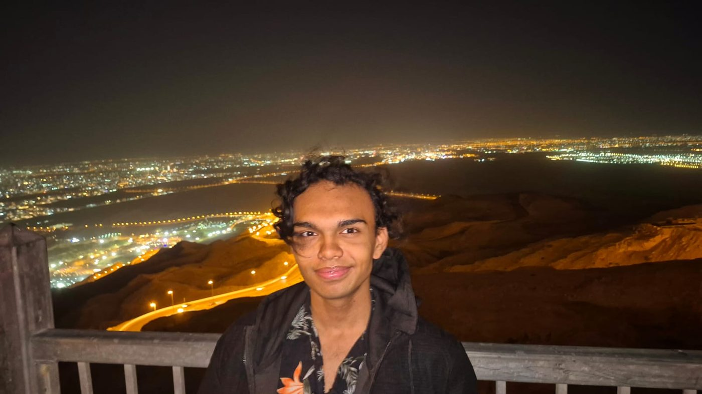
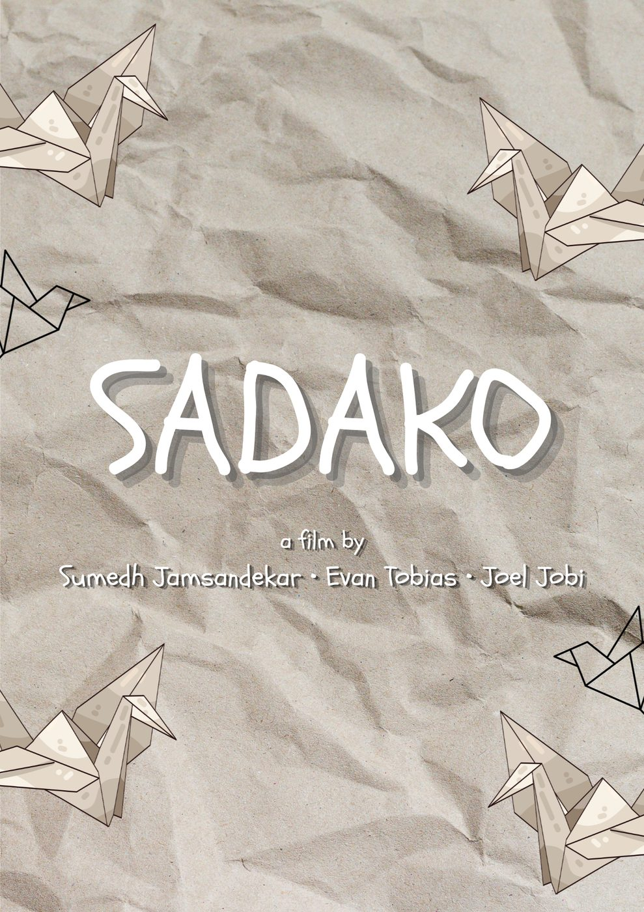

SUMEDHJAMSANDEKAR

writer · director · engineer
about
I’m a second-year Energy Engineering student at IIT Delhi Abu Dhabi. Most of my spare time goes to writing. Sadako (2025) was the first short film I finished. When I’m not at a script, I’ve got a movie on, a show running, or a game I’m halfway through. I read in between.
the film

Sadako (2025)
A young girl who loves origami sits down with a single sheet of paper and begins to fold. With every careful crease, a quiet stop-motion story takes shape, one about perseverance, hope, and wishes made on paper.
a film by Sumedh Jamsandekar · Evan Tobias · Joel Jobi
Best Audio · Best Storytelling · Audience Choice
University Film Festival 2025
- Runtime
- 5 min
- Format
- Stop-motion / Animation
- Country
- United Arab Emirates
- Language
- English
- Released
- 30 Oct 2025
wishes made on paper.
the shelf
[ Select a card to inspect ]
roles & recognition
positions
- 2025: Marketing & Creatives Head, IITDAD Coding Club
- 2025: Core Member, Digital Arts & Design Club
- 2025: Millennium Fellow, UN Academic Impact & MCN
competitions
- 2025: Best Audio, Best Storytelling, Audience Choice · University Film Festival (Sadako)
- 2026: 2nd Place, Hyperloop · TRYST
- 2026: 2nd Place, Titan · TRYST
- 2026: 3rd Place, Casecation · TRYST